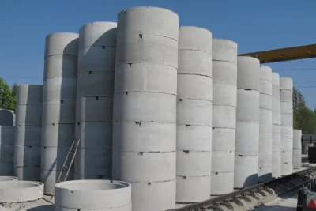
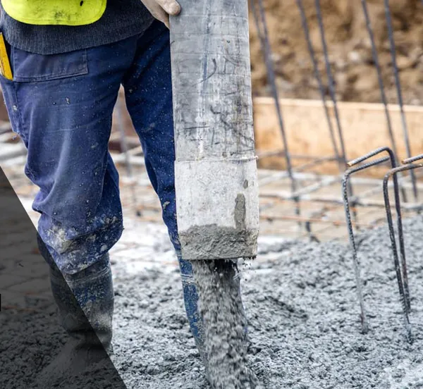
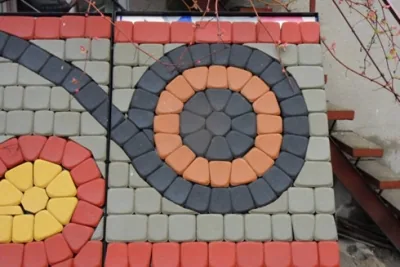
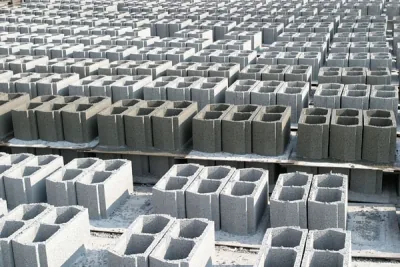
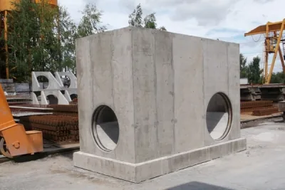
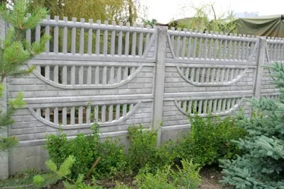
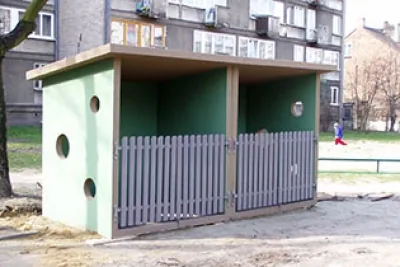
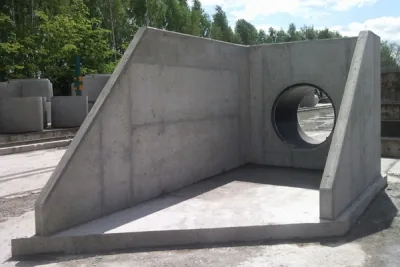
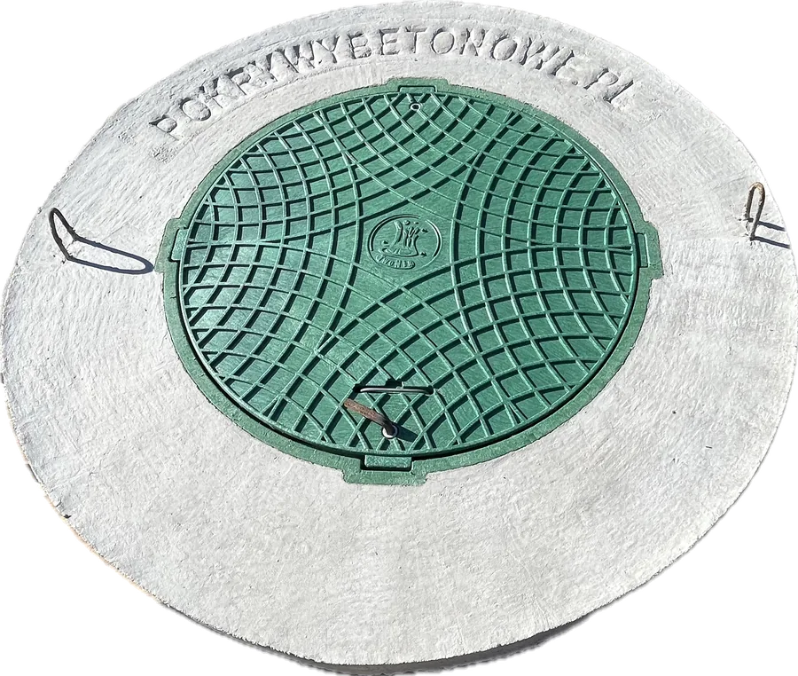
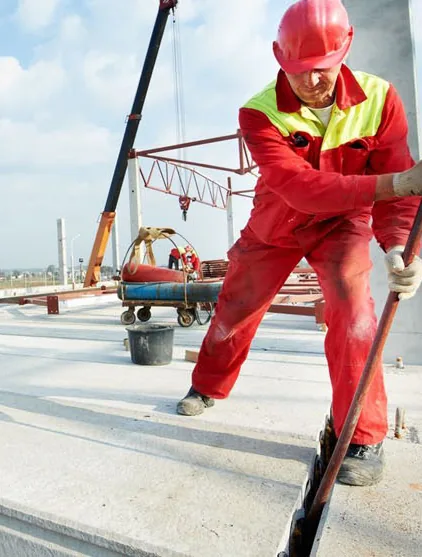

Kanalizacja i uzbrojenie pasa
Kręgi C35/45 i wg DIN 4034, pokrywy na studnie i odciążające, rury przepustowe i Wipro, ścianki oporowe przepustów, zbiorniki ściekowe.
Stała, powtarzalna klasa betonu od C8/10 do C35/45. Przywozimy go betonomieszarką i podajemy pompą z wysięgnikiem do 36 m - nawet 60 km od betoniarni.
Zamów beton
Na fundamenty, stropy, posadzki i drogi. Beton i stabilizacje robimy z surowców wysokiej jakości, a każda partia ma tę samą, powtarzalną klasę - dokładnie tę z zamówienia.
Krajowy Certyfikat Zgodności Zakładowej Kontroli Produkcji nr 205-UWB-158 oraz 205-UWB-159.
Zapytaj o cenę betonuWłasne betonomieszarki i pompy, więc termin dostawy ustalasz bezpośrednio z betoniarnią.
Rynna (lej) do 8 m. Mamy też gruszki z lejem hydraulicznym, który ułatwia podawanie i wylewanie betonu.
Wszystkie pompy mają aktualny dozór techniczny TDT.
Transport betonu z podaniem pompą na odległość do 60 km od betoniarni w Parszowie.
Betoniarnia: Parszów, ul. Złotoglin 91, 27-215 Wąchock
Uzbrojenie terenu, drogownictwo i budownictwo mieszkaniowe. W ciągłej sprzedaży: kręgi, pokrywy, przepusty drogowe i ścianki betonowe.

Kręgi C35/45 i wg DIN 4034, pokrywy na studnie i odciążające, rury przepustowe i Wipro, ścianki oporowe przepustów, zbiorniki ściekowe.

Kostka brukowa, krawężniki i obrzeża, korytka odwodnienia liniowego, płytki chodnikowe i płytki EKO.

Stropy TERIVA i nadproża L-19 na budowę domu.

Komory i osadniki, komory wodociągowe.

Ogrodzenia prefabrykowane, słupki graniczne i parkingowe, pustak łupany, gazony ogrodowe.

Obudowy pojemników 1,1 m3 i 0,12 m3 oraz obudowy kontenerów.

Wyloty betonowe, zamykane pokrywy z włazem, stopy fundamentowe i inne elementy według projektu.
Produkujemy też studnie telefoniczne dla budownictwa telekomunikacyjnego. Prefabrykaty dowozimy samochodem z żurawikiem i rozładunkiem na budowie.
Jako producent sprzedajemy pokrywy betonowe także w sklepie internetowym pokrywybetonowe.pl. Przywozimy je na palecie, z rozładunkiem pod domem albo na budowie.


Mamy dużą bazę sprzętu, także ciężkiego. Przygotujemy teren, wykonamy roboty ziemne i drogowe, a beton i prefabrykaty dowieziemy z własnej wytwórni.
Napisz, co i gdzie budujesz, a oddzwonimy z ceną i terminem dostawy. Szybciej będzie telefonicznie: 511 11 50 11.